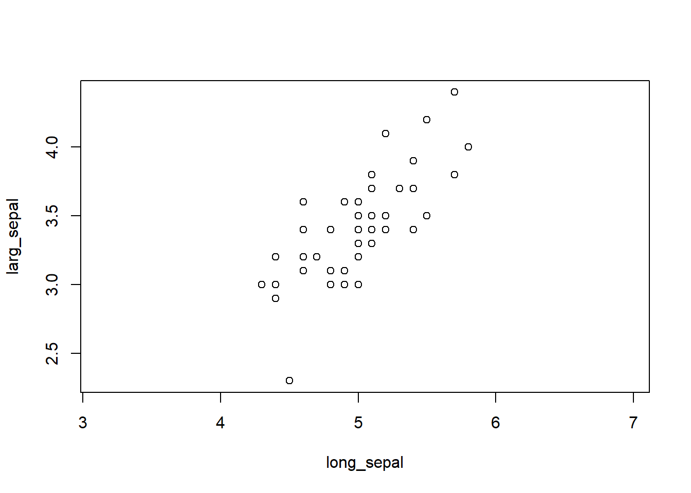
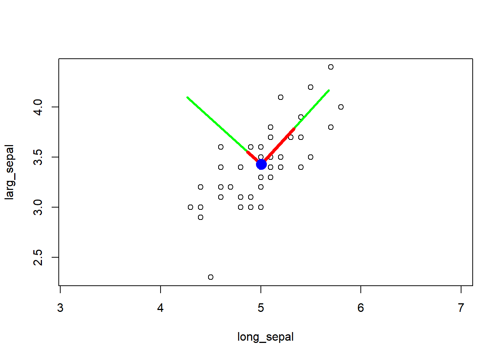
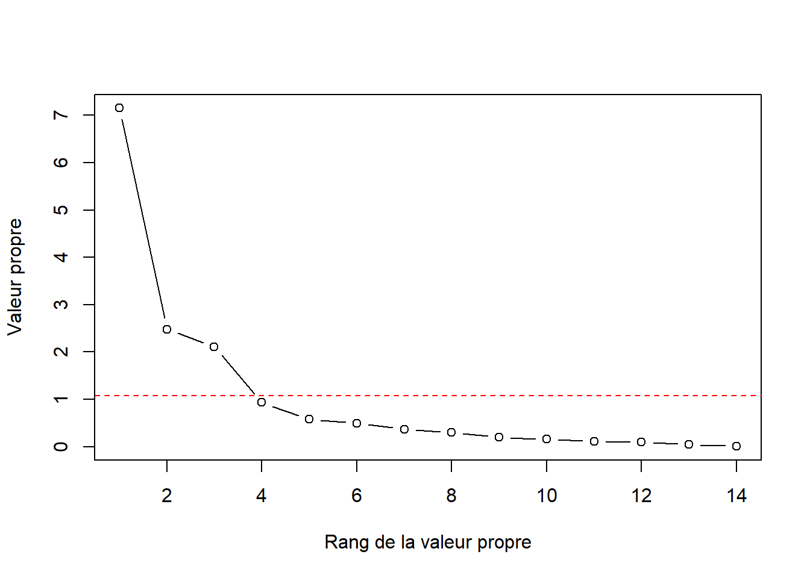
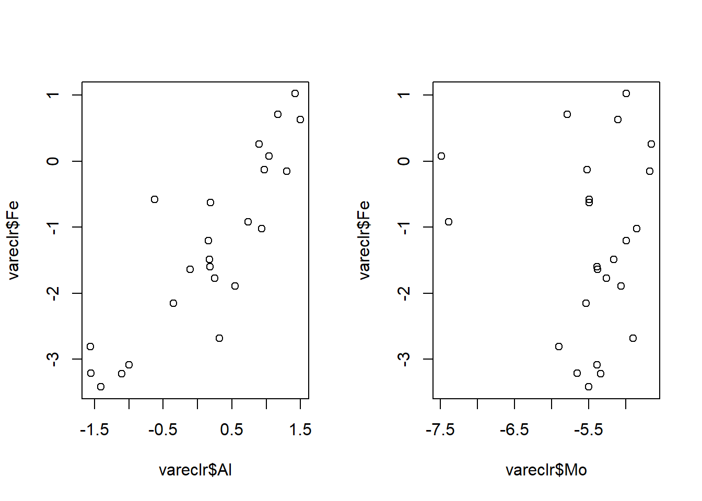
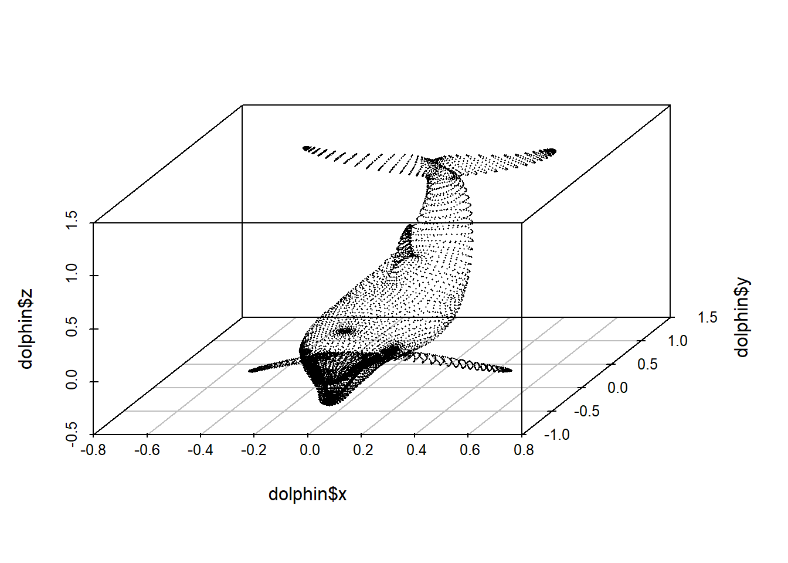
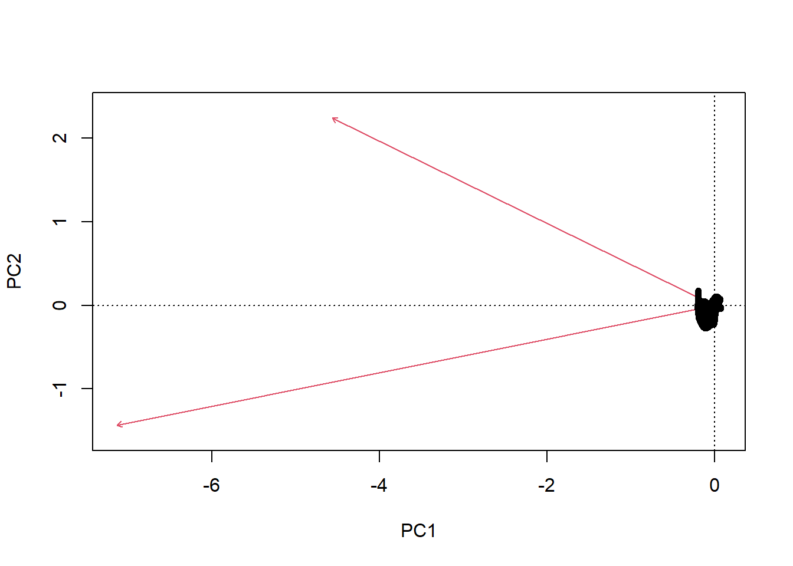
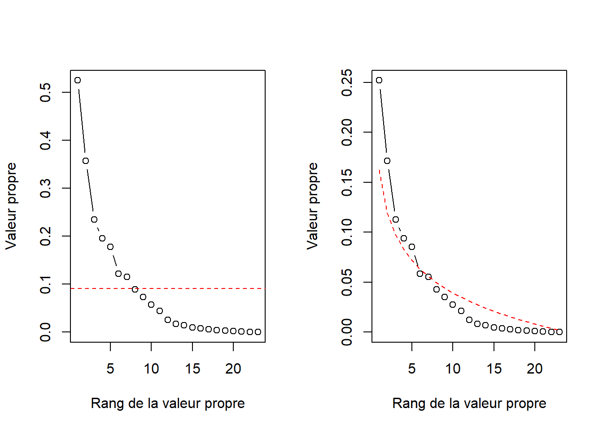
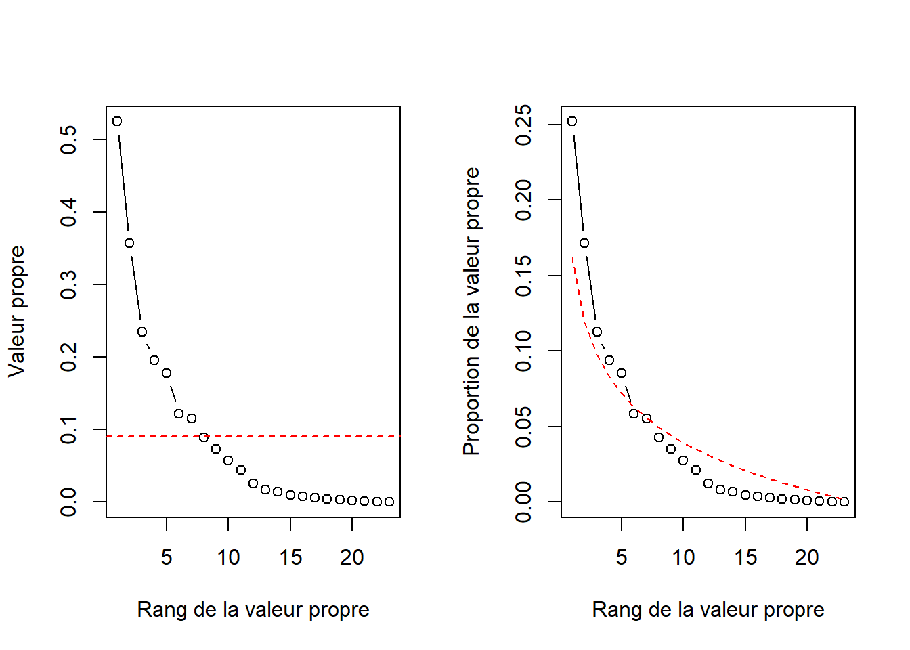
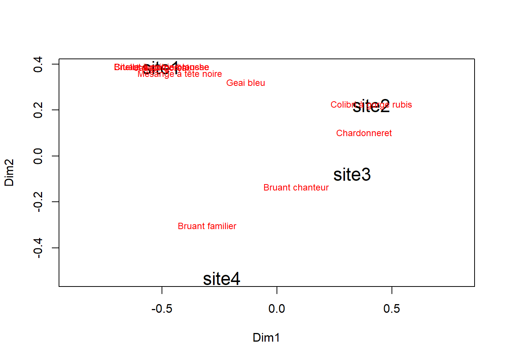
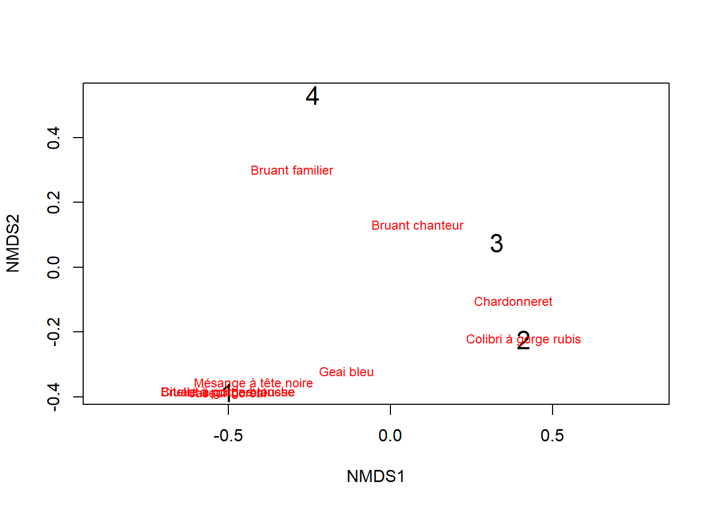

Chapitre 10 Ordination
ANalyse statistique multivariée
️ Objectifs spécifiques:
À la fin de ce chapitre, vous serez en mesure d’effectuer des calculs d’ordination à l’aide des techniques communes de réduction d’axes entre autres :
l’Analyse en Composantes Principales (ACP) - Principal Components Analysis (PCA),
l’Analyse de Correspondance (AC) - Correspondence Analysis (CA),
l’Analyse en Coordonnées Principales (ACoP) - Principal Coordinates Analysis (PCoA),
l’Analyse Discriminante Linéaire (ADL) - Linear Discriminant Analysis (LDA),
l’Analyse de Redondance (RDA) - Redundancy Analysis (RDA), et
l’Analyse canonique des correspondances (ACC) - Canonical Correspondence Analysis (CCA).
10.1 Introduction
En écologie, biologie, agronommie comme en foresterie, la plupart des tableaux de données comprennent de nombreuses variables :
- pH,
- nutriments (N, P, K, Mg, Ca, …),
- climat (pluviométrie, température, SDI, …),
- espèces ou cultivars, paramètres végétatifs et de rendements,
- topographie,
- etc.
L’ordination vise à mettre de l’ordre dans des données dont le nombre élevé de variables peut amener à des difficultés d’appréciation et d’interprétaion (Legendre et Legendre, 2012).
Plus précisément, le terme ordination est utilisé en écologie pour désigner les techniques de réduction d’axe.
L’analyse en composantes principales est probablement la plus connue de ces techniques. Mais de nombreuses autres techniques ont été développées au cours des dernières années, chacune ayant ses domaines d’application.
Les techniques de réduction d’axe permettent de dégager l’information la plus importante en projetant une synthèse des relations entre les observations et entre les variables. Certaines techniques ne supposant aucune structure a priori sont dites non-contraignantes : elles ne comprennent pas de tests statistiques. À l’inverse, les ordinations contraignantes lient des variables descriptives avec une ou plusieurs variables prédictives. La référence en la matière est indiscutablement le livre Numerical Ecology de Legendre et Legendre (2012).
Cette section en couvrira quelques unes et vous guidera vers la technique la plus appropriée pour vos données.
10.2 Ordination non contraignante
Cette section couvrira :
- l’analyse en composantes principales (ACP),
- l’analyse de correspondance (AC),
- l’analyse factorielle (AF), ainsi que
- l’analyse en coordonnées principales (ACoP).
| Méthode | Distance préservée | Variables (type de données) |
|---|---|---|
| Analyse en composantes principales (ACP) | Distance euclidienne | Données quantitatives, relations linéaires (attention aux double-zéros) |
| Analyse de correspondance (AC) | Distance de \(\chi^2\) | Données non-négatives, dimensionnellement homogènes ou binaires, abondance ou occurence |
| Positionnement multidimensionnel (PoMd) | Toute mesure de dissimilarité | Données quantitatives, qualitatives nominales/ordinales ou mixtes |
Source: Adapté de (Legendre et Legendre, 2012, chapitre 9)
10.2.1 Analyse en composantes principales
L’objectif d’une ACP est de représenter les données dans un nombre réduit de dimensions représentant le plus possible la variation d’un tableau de données : elle permet de projetter les données dans un espace où les variables sont combinées en axes orthogonaux dont le premier axe capte le maximum de variance. L’ACP peut par exemple être utilisée pour analyser des corrélations entre variables ou dégager l’information la plus pertinente d’un tableau de données météo ou de signal en un nombre plus retreint de variables.
L’ACP effectue une rotation des axes à partir du centre (moyenne) du nuage de points effectuée de manière à ce que le premier axe définisse la direction où l’on retrouve la variance maximale. Ce premier axe est une combinaison linéaire des variables et forme la première composante principale. Une fois cet axe définit, on trouve le deuxième axe, orthogonal au premier, où l’on retouve la variance maximale - cet axe forme la deuxième composante principale, et ainsi de suite jusqu’à ce que le nombre d’axe corresponde au nombre de variables.
Conceptuellement, toutes les colonnes d’un jeu de données contiennent de l’information potentiellement interessante. L’ACP crée un jeu de données artificiel avec un nombre de dimensions égal à celui du premier. La seule différence est que ses premières dimensions concentrent la majeure partie de l’information. Dans le monde de l’ACP, l’information est appelée inertie. Les dimensions sont appelées facteurs ou axes principaux.
Les projections des observations sur ces axes principaux sont appelés les scores ou valeurs propres (eigenvalues).
Les projections des variables sur les axes principaux sont les vecteurs propres (eigenvectors, ou loadings).
La variance des composantes principales diminue de la première à la dernière, et peut être calculée comme une proportion de la variance totale : c’est le pourcentage d’inertie.
Par convention, on utilise les valeurs propres (eigenvalues) pour mesurer l’importance des axes.
Si la première composante principale a une inertie de 50% et la deuxième une intertie de 30%, la représentation en \(2D\) des projections représentera 80% de la variance du nuage de points. L’information perdue est donc de 20% sur les dimensions initiales réduites à 2 dimensions.
L’hétérogénéité des échelles de mesure peut avoir une grande importance sur les résultats d’une ACP (les données doivent être dimensionnellement homogènes). En effet, la hauteur d’un …cériser… aura une variance plus grande que le diamètre d’une …cérise… exprimé dans les mêmes unités, et cette dernière aura plus de variance que la teneur en cuivre d’une feuille.
- Il est conséquemment avisé de mettre les données à l’échelle en centrant la moyenne à \(0\) et l’écart-type à \(1\) avant de procéder à une ACP. L’ACP a été conçue pour projetter en un nombre moindre de dimensions des observations dont les distributions sont multinormales. Bien que l’ACP soit une technique robuste, il est préférable de transformer préalablement les variables dont la distribution est particulièrement asymétriques (Legendre et Legendre, 2012, p. 450).
Le cas échéant, les valeurs extrêmes pourraient faire dévier les vecteurs propres et biaiser l’analyse. En particulier, les ACP menées sur des données compositionnelles sont réputées pour générer des analyses biaisées (Pawlowsky-Glahn and Egozcue, 2006).
Le test de Mardia (Korkmaz, 2014) peut être utilisé pour tester la multinormalité.
- Une distribution multinormale devrait générer des scores en forme d’hypersphère (en forme de cercle sur un biplot : voir plus loin).
10.2.1.1 Vecteurs propres et valeurs propres
L’algorithme de l’ACP effectue sur la matrice individus/variables, différentes opérations,
- centrage-réduction des données,
- diagonalisation de la matrice de corrélation,
- extraction de valeurs propres et de vecteurs propres,
- etc.
en vue de passer du nombre de variables initiales à un nombre réduit de variables obtenues par combinaison linéaire des premières :les composantes principales (Kakai et al., 2016).
Une matrice carrée (comme une matrice de covariance, appelée \(\Sigma\)) multipliée par un vecteur propre (\(e\)) est égale aux valeurs propres (\(\lambda\)) multipliées par les vecteurs propres (\(e\)).
\[ \Sigma e = \lambda e \]
De manière intuitive,
les vecteurs propres indiquent l’orientation de la covariance, et
les valeurs propres indiquent la longueur associée à cette direction.
L’ACP est basée sur le calcul des vecteurs propres et des valeurs propres de la matrice de covariance des variables.
Pour d’abord obtenir les valeurs propres (\(\lambda\)), il faut résoudre l’équation
\[ det(cov(X) - \lambda I) = 0 \]
où
- \(det()\) est l’opération permettant de calculer le déterminant,
- \(cov()\) est l’opération pour calculer la covariance,
- \(X\) est la matrice de données (le dataframe),
- les \(\lambda\) sont les valeurs propres et
- \(I\) est une matrice d’identité.
Pour \(p\) variables dans votre tableau \(X\), vous obtiendrez \(p\) valeurs propres. Ensuite, on trouve les vecteurs propres en résolvant l’équation $ e = e $.
Bien qu’il soit possible d’effectuer cette opération à la main pour des cas très simples, vous aurez avantage à utiliser un langage de programmation.
Chargeons les données d’iris, puis isolons seulement les deux dimensions des sépales de l’espèce setosa.
## -- Attaching packages --------------------------------------- tidyverse 1.3.1 --## v ggplot2 3.3.3 v purrr 0.3.4
## v tibble 3.1.1 v dplyr 1.0.5
## v tidyr 1.1.3 v stringr 1.4.0
## v readr 1.4.0 v forcats 0.5.1## -- Conflicts ------------------------------------------ tidyverse_conflicts() --
## x dplyr::filter() masks stats::filter()
## x dplyr::lag() masks stats::lag()data("iris")
setosa_sepal <- iris %>%
filter(Species == "setosa") %>%
select(starts_with("Sepal")) %>%
rename(
long_sepal = Sepal.Length,
larg_sepal = Sepal.Width)
setosa_sepal## long_sepal larg_sepal
## 1 5.1 3.5
## 2 4.9 3.0
## 3 4.7 3.2
## 4 4.6 3.1
## 5 5.0 3.6
## 6 5.4 3.9
## 7 4.6 3.4
## 8 5.0 3.4
## 9 4.4 2.9
## 10 4.9 3.1
## 11 5.4 3.7
## 12 4.8 3.4
## 13 4.8 3.0
## 14 4.3 3.0
## 15 5.8 4.0
## 16 5.7 4.4
## 17 5.4 3.9
## 18 5.1 3.5
## 19 5.7 3.8
## 20 5.1 3.8
## 21 5.4 3.4
## 22 5.1 3.7
## 23 4.6 3.6
## 24 5.1 3.3
## 25 4.8 3.4
## 26 5.0 3.0
## 27 5.0 3.4
## 28 5.2 3.5
## 29 5.2 3.4
## 30 4.7 3.2
## 31 4.8 3.1
## 32 5.4 3.4
## 33 5.2 4.1
## 34 5.5 4.2
## 35 4.9 3.1
## 36 5.0 3.2
## 37 5.5 3.5
## 38 4.9 3.6
## 39 4.4 3.0
## 40 5.1 3.4
## 41 5.0 3.5
## 42 4.5 2.3
## 43 4.4 3.2
## 44 5.0 3.5
## 45 5.1 3.8
## 46 4.8 3.0
## 47 5.1 3.8
## 48 4.6 3.2
## 49 5.3 3.7
## 50 5.0 3.3Test de multinormalité de Mardia :
## Registered S3 method overwritten by 'GGally':
## method from
## +.gg ggplot2## sROC 0.1-2 loaded## Test Statistic p value Result
## 1 Mardia Skewness 0.759503524380438 0.943793240544741 YES
## 2 Mardia Kurtosis 0.0934600553610254 0.925538081956867 YES
## 3 MVN <NA> <NA> YESH0 du test : La distribution n’est pas multinormale.
Pour considérer la distribution comme multinormale, les p-value de la distortion (Mardia Skewness) et de la statistique de Kurtosis (Mardia Kurtosis) doivent être égales ou plus élevées que \(0.05\) (Kormaz, 2019, fiche d’aide de la fonction mvn de R). C’est bien le cas pour les données du tableau setosa_sepal.
Pour des petits jeux de données, on pourra faire certains calculs à la main. L’idée majeure dans ce cas est de savoir techniquement comment ça se fait. Pour rappels les calculs à la mitaine :
- de la moyenne,
\[ \bar{x} = \frac{1}{N} \sum_{i=1}^{n} n_{i} x_{i} \]
- de la variance,
\[ Var(X) =\frac{1}{N} \sum_{i=1}^{n} n_{i}\left(\bar{x}-x_{i}\right)^{2} \]
- de l’écart-type,
\[ \sigma_{X}=\sqrt{\operatorname{Var}(x)} \]
- de la covariance, avec une 2nde formule de calcule plus pratique
\[ \operatorname{Cov}(X, Y)=\frac{1}{N} \sum\left(x_{i}-\mu(X)\right) \times\left(y_{i}-\mu(Y)\right) \]
\[ \operatorname{Cov}(X, Y)=\left(\frac{1}{N} \sum x_{i} y_{i}\right)-\mu(X) \times \mu(Y) \]
- du coefficient de corrélation
\[ \operatorname{Corr}(X, Y)=\frac{\operatorname{Cov}(X, Y)}{\sigma(X) \sigma(Y)} \]
Mais profitons du génie logiciel avec R. Retirons de la matrice de covariance, les valeurs et vecteurs propres avec la fonction eigen du package base.
## [1] 0.23366074 0.03427804## [,1] [,2]
## [1,] 0.6717496 -0.7407783
## [2,] 0.7407783 0.6717496Le premier vecteur propre correspond à la première colonne, et le second à la deuxième. Les coordonnées \(x\) et \(y\) sont les premières et deuxièmes lignes.
Les vecteurs propres ont une longueur unitaire (norme de 1). Ils peuvent être mis à l’échelle à la racine carrée des valeurs propres.
## [,1] [,2]
## [1,] 0.3247134 -0.1371501
## [2,] 0.3580809 0.1243699Un aperçu de la racine carrée des valeurs propres en matrice diagonale :
## [,1] [,2]
## [1,] 0.4833847 0.0000000
## [2,] 0.0000000 0.1851433Pour effectuer la translation des vecteurs propres au centre du nuage de point, nous avons besoin du centroïde.
## long_sepal larg_sepal
## 5.006 3.428Aperçu graphique :
- Le nuage de points

- Ajout des vecteurs propres brutes en couleur verte :
plot(setosa_sepal, asp = 1) # asp, the y/x aspect ratio
# vecteurs propres brutes
lines(x = c(centroid[1], centroid[1] + setosa_eigenvec[1, 1]),
y = c(centroid[2], centroid[2] + setosa_eigenvec[2, 1]), col = "green", lwd = 3) # vecteur propre 1
lines(x=c(centroid[1], centroid[1] + setosa_eigenvec[1, 2]),
y=c(centroid[2], centroid[2] + setosa_eigenvec[2, 2]), col = "green", lwd = 3) # vecteur propre 2
- Ajout des vecteurs propres à l’échelle en couleur rouge :
plot(setosa_sepal, asp = 1) # asp, the y/x aspect ratio
# vecteurs propres brutes
lines(x = c(centroid[1], centroid[1] + setosa_eigenvec[1, 1]),
y = c(centroid[2], centroid[2] + setosa_eigenvec[2, 1]),
col = "green", lwd = 3) # vecteur propre 1
lines(x=c(centroid[1], centroid[1] + setosa_eigenvec[1, 2]),
y=c(centroid[2], centroid[2] + setosa_eigenvec[2, 2]),
col = "green", lwd = 3) # vecteur propre 2
# vecteurs propres à l'échelle
lines(x = c(centroid[1], centroid[1] + setosa_eigenvec_sc[1, 1]),
y = c(centroid[2], centroid[2] + setosa_eigenvec_sc[2, 1]),
col = "red", lwd = 4) # vecteur propre 1
lines(x = c(centroid[1], centroid[1] + setosa_eigenvec_sc[1, 2]),
y = c(centroid[2], centroid[2] + setosa_eigenvec_sc[2, 2]),
col = "red", lwd = 4) # vecteur propre 2
- Ajout du centroid, le point bleu :
plot(setosa_sepal, asp = 1) # asp, the y/x aspect ratio
# vecteurs propres brutes
lines(x = c(centroid[1], centroid[1] + setosa_eigenvec[1, 1]),
y = c(centroid[2], centroid[2] + setosa_eigenvec[2, 1]),
col = "green", lwd = 3) # vecteur propre 1
lines(x=c(centroid[1], centroid[1] + setosa_eigenvec[1, 2]),
y=c(centroid[2], centroid[2] + setosa_eigenvec[2, 2]),
col = "green", lwd = 3) # vecteur propre 2
# vecteurs propres à l'échelle
lines(x = c(centroid[1], centroid[1] + setosa_eigenvec_sc[1, 1]),
y = c(centroid[2], centroid[2] + setosa_eigenvec_sc[2, 1]),
col = "red", lwd = 4) # vecteur propre 1
lines(x = c(centroid[1], centroid[1] + setosa_eigenvec_sc[1, 2]),
y = c(centroid[2], centroid[2] + setosa_eigenvec_sc[2, 2]),
col = "red", lwd = 4) # vecteur propre 2
points(x = centroid[1], y = centroid[2], pch = 16, cex = 2, col = "blue") # centroid
On peut observer que, comme mentionné plus haut, les vecteurs propres indiquent l’orientation de la covariance, et les valeurs propres indiquent la longueur associée à cette direction.
10.2.1.2 Biplot de l’ACP
Imaginez un nuage de points en \(3D\), axe \(y\) compris.

Vous tournez votre nuage de points pour trouver la perspective en \(2D\) qui fera en sorte que vos données soient les plus dispersées possibles, voir présentation grossière :
Nuage de points en 3 dimensions
Lorsque la perspective est trouvée, avec une lampe de poche, vous illuminez votre nuage de points dans l’axe de cette perspective : vous venez d’effectuer une analyse en composantes principales, et l’ombre des points et des axes sur le mur formera votre biplot.
Pour créer un biplot, on juxtapose :
les descripteurs (les variables) en tant que vecteurs propres, représentés par des flèches,
et les objets (les observations) en tant que scores (valeurs propres), représentés par des points.
Les résultats d’une ordination peuvent être présentés selon deux types de biplots ou de projections (Legendre et Legendre, 2012) courramment utilisés :
Les Biplots de distance
Ce type de projection permet de visualiser la position des objets (observations) entre eux et par rapport aux descripteurs (variables) et d’apprécier la contribution des descripteurs pour créer les composantes principales.
Pour créer un biplot de distance, on projette directement les vecteurs propres (\(U\)) en guise de descripteurs. Pour ce qui est des objets, on utilise les scores de l’ACP (\(F\)). De cette manière,
les distances euclidiennes entre les scores sont des approximations des distances euclidiennes dans l’espace multidimentionnel,
la projection d’un objet sur un descripteur perpendiculairement à ce dernier est une approximation de la position de l’objet sur le descripteur et
la projection d’un descripteur sur un axe principal est proportionnelle à sa contribution pour générer l’axe.
Les Biplots de corrélation
Cette projection permet d’apprécier les corrélations entre les descripteurs.
Pour ce faire,
les objets et les valeurs propres doivent être transformés.
Pour générer les descripteurs, les vecteurs propres (\(U\)) doivent être multipliés par la matrice diagonalisée de la racine carrée des valeurs propres (\(\Lambda\)), c’est-à-dire \(U \Lambda ^{\frac{1}{2}}\).
En ce qui a trait aux objets, on multiplie les scores (\(F\)) par la racine carrée négative des valeurs propres diagonalisées, c’est-à-dire \(F \Lambda ^{- \frac{1}{2}}\).
De cette manière,
- tout comme c’est le cas pour le biplot de distance, la projection d’un objet sur un descripteur perpendiculairement à ce dernier est une approximation de la position de l’objet sur le descripteur,
- la projection d’un descripteur sur un axe principal est proportionnelle à son écart-type et
- les angles entre les descripteurs sont proportionnels à leur corrélation (et non pas leur proximité).
En d’autres mots, le biplot de distances devrait être utilisé pour apprécier la distance entre les objets et le biplot de corrélation devrait être utilisé pour apprécier les corrélations entre les descripteurs. Mais dans tous les cas, le type de biplot utilisé doit être indiqué.

Le triplot est une forme apparentée au biplot, auquel on ajoute des variables prédictives. Le triplot est utile pour représenter les résultats des ordinations contraignantes comme les analyses de redondance et les analyse de correspondance canoniques.
10.2.1.3 Application
Bien que l’ACP puisse être effectuée grâce à des modules de base de R, nous utiliserons le module vegan. Le tableau varechem comprend des données issues d’analyse de sols identifiés par leur composition chimique, leur pH, leur profondeur totale et la profondeur de l’humus publiées dans Väre et al. (1995) et exportées du module vegan.
## Loading required package: permute## Loading required package: lattice## This is vegan 2.5-7## N P K Ca Mg S Al Fe Mn Zn Mo Baresoil
## 9 15.0 48.4 127.4 499.6 75.1 46.9 227.1 32.2 35.1 8.9 0.70 6.07
## 12 16.0 32.7 126.4 471.4 61.3 31.1 108.8 9.5 26.4 6.0 0.40 11.20
## 11 16.7 55.8 205.3 1169.7 126.3 35.9 253.6 96.4 25.1 8.2 0.05 7.60
## 28 29.8 73.5 260.0 748.6 105.3 42.5 17.9 2.4 106.6 9.3 0.30 17.60
## 24 20.2 67.7 207.1 973.3 209.1 58.1 138.0 35.4 32.1 16.8 0.80 21.20
## Humdepth pH
## 9 2.2 3.0
## 12 2.2 2.9
## 11 1.1 3.6
## 28 3.0 2.8
## 24 2.0 3.0Comme nous l’avons vu précdemment, les données de concentration sont de type compositionnelles. Les données compositionnelles du tableau varechem mériteraient d’être transformées (Aitchison et Greenacre, 2002). Utilisons les log-ratios centrés (clr).
## Welcome to compositions, a package for compositional data analysis.
## Find an intro with "? compositions"##
## Attaching package: 'compositions'## The following objects are masked from 'package:stats':
##
## cor, cov, dist, var## The following objects are masked from 'package:base':
##
## %*%, norm, scale, scale.defaultvarecomp <- varechem %>%
select(-Baresoil, -Humdepth, -pH) %>%
mutate(Fv = apply(., 1, function(x) 1e6 - sum(x)))
vareclr <- varecomp %>%
acomp(.) %>%
clr(.) %>%
as_tibble() %>%
bind_cols(varechem %>%
select(Baresoil, Humdepth, pH))
vareclr %>%
sample_n(5)## # A tibble: 5 x 15
## N P K Ca Mg S Al Fe Mn Zn Mo
## * <dbl> <dbl> <dbl> <dbl> <dbl> <dbl> <dbl> <dbl> <dbl> <dbl> <dbl>
## 1 -1.69 -0.624 0.830 1.59 -0.0312 -0.729 0.189 -0.626 -0.331 -2.60 -5.49
## 2 -1.76 -0.553 0.565 2.11 0.575 -0.706 0.159 -1.20 -1.30 -1.95 -4.99
## 3 -1.38 -0.525 0.659 1.96 -0.193 -0.767 0.172 -1.49 -0.102 -2.33 -5.16
## 4 -0.860 -0.822 0.00250 1.09 -0.337 -1.06 1.42 1.02 -1.64 -3.34 -4.99
## 5 -1.68 -0.469 0.833 2.57 0.347 -0.910 1.04 0.0773 -1.27 -2.39 -7.49
## # ... with 4 more variables: Fv <dbl>, Baresoil <dbl>, Humdepth <dbl>, pH <dbl>Effectuons l’ACP. Pour cet exemple, nous standardiserons les données étant données que les colonnes Baresoil, Humedepth et pH ne sont pas à la même échelle que les colonnes des clr.
vareclr_sc <- scale(vareclr)
vare_pca <- rda(vareclr_sc)
# ou bien rda(vareclr, scale = TRUE, mais la mise à l'échelle préalable est plus explicite)L’objet vareclr_pca contient l’information nécessaire pour mener notre ACP.
##
## Call:
## rda(X = vareclr_sc)
##
## Partitioning of variance:
## Inertia Proportion
## Total 15 1
## Unconstrained 15 1
##
## Eigenvalues, and their contribution to the variance
##
## Importance of components:
## PC1 PC2 PC3 PC4 PC5 PC6 PC7
## Eigenvalue 7.1523 2.4763 2.1122 0.93015 0.57977 0.48786 0.36646
## Proportion Explained 0.4768 0.1651 0.1408 0.06201 0.03865 0.03252 0.02443
## Cumulative Proportion 0.4768 0.6419 0.7827 0.84473 0.88338 0.91590 0.94034
## PC8 PC9 PC10 PC11 PC12 PC13
## Eigenvalue 0.29432 0.19686 0.15434 0.107357 0.095635 0.042245
## Proportion Explained 0.01962 0.01312 0.01029 0.007157 0.006376 0.002816
## Cumulative Proportion 0.95996 0.97308 0.98337 0.990527 0.996902 0.999719
## PC14
## Eigenvalue 0.0042200
## Proportion Explained 0.0002813
## Cumulative Proportion 1.0000000
##
## Scaling 2 for species and site scores
## * Species are scaled proportional to eigenvalues
## * Sites are unscaled: weighted dispersion equal on all dimensions
## * General scaling constant of scores: 4.309777
##
##
## Species scores
##
## PC1 PC2 PC3 PC4 PC5 PC6
## N 0.1437 0.7606 -0.6792 0.19837 0.1128526 -0.050149
## P 0.8670 -0.3214 -0.2950 -0.22940 0.1437960 -0.042884
## K 0.9122 -0.3857 0.2357 0.03469 0.2737020 0.075717
## Ca 0.9649 -0.3362 -0.2147 0.17757 -0.2188717 0.008051
## Mg 0.8263 -0.2723 0.1035 0.52135 -0.1495399 -0.342214
## S 0.8825 -0.3169 0.3539 -0.21216 0.1176279 -0.191386
## Al -1.0105 -0.2442 0.2146 0.02674 -0.1005560 -0.043569
## Fe -1.0338 -0.2464 0.1492 0.13162 0.1512218 0.081571
## Mn 0.9556 0.1041 -0.1256 -0.21300 0.2565831 0.275275
## Zn 0.7763 -0.1031 -0.3123 -0.36493 -0.5665691 0.153089
## Mo -0.2152 0.8717 0.4065 -0.33643 -0.2134335 -0.167725
## Fv 0.2360 0.5776 -0.8112 0.12736 0.1280097 -0.109737
## Baresoil 0.5147 0.4210 0.4472 0.54980 -0.1438570 0.463148
## Humdepth 0.7455 0.4379 0.5194 0.16493 0.0004757 -0.273056
## pH -0.5754 -0.5864 -0.5957 0.23408 -0.1517661 -0.056641
##
##
## Site scores (weighted sums of species scores)
##
## PC1 PC2 PC3 PC4 PC5 PC6
## 18 0.16862 0.423777 0.46731 0.91175 1.10380 1.06421
## 15 -0.09705 -0.097482 0.61143 -0.29049 1.14916 0.40622
## 24 0.02831 -0.795737 0.74176 -0.19097 -2.43337 -0.81762
## 27 1.39081 -0.354376 -0.19377 -0.45160 0.46020 -0.31446
## 23 1.30346 0.357866 0.29887 0.76856 0.20913 -0.64145
## 19 0.43636 0.495037 1.21722 1.18128 -0.98242 -0.74474
## 22 1.07306 0.467575 -0.32245 0.03717 0.13956 -0.64972
## 16 0.02545 0.659714 -0.28861 -0.01424 0.47105 0.45173
## 28 1.42005 0.007356 -0.29000 -0.78474 0.97592 -0.80263
## 13 -0.50638 -0.220909 1.52981 0.26289 0.42135 0.94054
## 14 0.45392 0.649297 0.44573 -0.26620 -0.74522 -0.53228
## 20 0.18623 0.259640 0.89112 0.21096 -0.51393 2.24361
## 25 1.26264 0.225744 -0.96668 -0.69334 0.61990 0.43312
## 7 -1.48685 0.739545 -0.20926 1.09256 0.61856 -0.87999
## 5 -0.50622 1.108685 -2.61287 -1.00433 -1.35383 1.21964
## 6 -1.28653 0.898663 -0.38778 -0.47556 -0.02449 -0.29419
## 3 -1.72773 0.476962 -0.48878 0.71156 1.06398 -1.33473
## 4 -0.82844 -0.296515 1.20315 -1.49821 -0.18330 1.05231
## 2 -1.00247 -0.609253 0.25185 -0.85420 0.71031 0.14854
## 9 -0.43405 -0.338912 0.55348 -1.35776 -0.81986 -1.02468
## 12 -0.05083 0.122645 -0.04611 -0.56047 -0.26151 -0.98053
## 10 0.17891 -2.315489 -0.69084 -0.19547 0.80628 0.04291
## 11 -0.46443 -2.592018 -1.21615 1.56359 -0.62334 0.28748
## 21 0.46316 0.728185 -0.49843 1.89726 -0.80791 0.72671La deuxième ligne de Importance of components, Proportion Explained, indique la proportion de la variance totale captée successivement par les axes principaux. Le premier axe principal comporte 47.68% de la variance. Le deuxième axe principal ajoutant une proportion de 16,51%, une représentation en deux axes principaux présentent 64.19 % de la variance.
## PC1 PC2 PC3 PC4 PC5 PC6
## 0.4768180610 0.1650859388 0.1408156459 0.0620101490 0.0386511040 0.0325238535
## PC7 PC8 PC9 PC10 PC11 PC12
## 0.0244303815 0.0196215021 0.0131238464 0.0102890284 0.0071571089 0.0063756951
## PC13 PC14
## 0.0028163495 0.0002813359La décision du nombre d’axes principaux à retenir est arbitraire.
Elle peut dépendre d’un nombre maximal de paramètres à retenir pour éviter de surdimensionner un modèle (curse of dimensionality, section 11),
ou d’un seuil de pourcentage de variance minimale à retenir, par exemple 75%,
ou bien, vous retiendrez deux composantes principales si vous désirez présenter un seul biplot.
L’approche de Kaiser-Guttmann (Borcard et al., 2011) consiste à sélectionner les composantes principales dont la valeur propre est supérieure à leur moyenne.
plot(x = 1:length(vare_pca$CA$eig),
y = vare_pca$CA$eig,
type = "b",
xlab = "Rang de la valeur propre",
ylab = "Valeur propre")
abline(h = mean(vare_pca$CA$eig), col = "red", lty = 2)
L’approche du broken stick consiste à couper un bâton d’une longueur de 1 en n tranches :
La première tranche est de longueur \(\frac{1}{n}\).
La tranche suivante est d’une longueur de la tranche précédente à laquelle on aditionne \(\frac{1}{longueur~restante}\).
Puis on place les longueurs en ordre décroissant.
On retient les composantes principales dont les valeurs propres cumulées sont plus grandes que le broken stick.
broken_stick <- function(x) {
bsm <- vector("numeric", length = x)
bsm[1] <- 1/x
for (i in 2:x) {
bsm[i] <- bsm[i-1] + 1/(x+1-i)
}
bsm <- rev(bsm/x)
return(bsm)
}Le graphique du broken stick :
plot(x = 1:length(vare_pca$CA$eig),
y = prop_expl,
type = "b",
xlab = "Rang de la valeur propre",
ylab = "Valeur propre")
lines(x = 1:length(vare_pca$CA$eig),
y = broken_stick(length(vare_pca$CA$eig)),
col = "red",
lty = 2)Les approches Kaiser-Guttmann et broken stick suggèrent que les trois premières composantes sont suffisantes pour décrire la dispersion des données.
Généralement, on estime qu’une concentration d’information de 50 % du tableau de départ est suffisante pour garantir une précision d’analyse et sert de critère de choix du nombre de composantes principales à retenir (Kakai et al., 2016).
Examinons les loadings (vecteurs propres) plus en particulier. Dans le langage du module vegan, les vecteurs propres sont les espèces (species) et les scores sont les sites.
vare_eigenvec <- vegan::scores(vare_pca, scaling = 2, display = "species",
choices = 1:(ncol(vareclr)-1))
vare_eigenvec## PC1 PC2 PC3 PC4 PC5 PC6
## N 0.1437343 0.7606006 -0.6792046 0.1983670 0.1128526122 -0.050148980
## P 0.8669892 -0.3213683 -0.2949864 -0.2294036 0.1437959857 -0.042883754
## K 0.9122089 -0.3857245 0.2356904 0.0346904 0.2737019601 0.075717162
## Ca 0.9648855 -0.3361651 -0.2147486 0.1775746 -0.2188716732 0.008050762
## Mg 0.8263327 -0.2723055 0.1035276 0.5213484 -0.1495399242 -0.342213793
## S 0.8824519 -0.3169039 0.3538854 -0.2121562 0.1176278503 -0.191386377
## Al -1.0105173 -0.2441785 0.2145614 0.0267422 -0.1005559874 -0.043569364
## Fe -1.0337676 -0.2463987 0.1491865 0.1316173 0.1512218115 0.081571443
## Mn 0.9555632 0.1041030 -0.1256178 -0.2130047 0.2565830557 0.275275174
## Zn 0.7763480 -0.1030878 -0.3122919 -0.3649341 -0.5665691228 0.153089144
## Mo -0.2152399 0.8717229 0.4064967 -0.3364279 -0.2134335302 -0.167725160
## Fv 0.2360040 0.5775863 -0.8111953 0.1273582 0.1280096553 -0.109737235
## Baresoil 0.5147445 0.4209983 0.4472351 0.5497950 -0.1438569673 0.463148072
## Humdepth 0.7455213 0.4379436 0.5193895 0.1649306 0.0004756685 -0.273056212
## pH -0.5753858 -0.5863743 -0.5957495 0.2340826 -0.1517660977 -0.056640816
## PC7 PC8 PC9 PC10 PC11
## N -0.09111164 -0.06122008 0.315645453 0.08090232 -0.019251478
## P 0.26894062 0.34111276 0.021124287 0.08756299 -0.045741546
## K -0.21662612 -0.01641260 0.143099440 -0.08737113 0.183005607
## Ca 0.03630015 0.04775616 -0.073609828 -0.10601799 0.161460554
## Mg 0.04617838 -0.12098602 -0.051599273 0.18373857 -0.009862571
## S -0.26825994 0.15822845 0.038378858 0.05100717 -0.138785063
## Al -0.22737412 0.10598673 0.040586196 -0.14473132 -0.089462074
## Fe 0.10553041 -0.09254655 -0.079426433 0.09908706 -0.006376211
## Mn 0.20224538 -0.19347804 -0.038859808 -0.07637994 -0.083300112
## Zn -0.12332232 -0.14862229 0.024026151 0.02643462 -0.064973307
## Mo 0.13788948 0.17165900 0.032981311 0.01419924 0.128814989
## Fv -0.20911147 0.11289753 -0.281443886 -0.08391004 -0.012456867
## Baresoil -0.02103009 0.23028292 0.004554036 0.02604286 -0.061147847
## Humdepth 0.17061078 -0.11310394 0.027515405 -0.23068827 -0.102189307
## pH 0.19890884 0.12152266 0.150118818 -0.15240317 -0.037691048
## PC12 PC13 PC14
## N 0.045420621 0.05020956 0.002340519
## P 0.145128883 -0.03337551 -0.010109130
## K 0.002260341 -0.10566808 0.001169065
## Ca 0.041210064 0.14341793 0.007419161
## Mg -0.063493608 -0.03782662 -0.023575986
## S -0.117144869 0.06075094 0.025874035
## Al 0.058212507 0.01983102 -0.037901576
## Fe 0.049837173 -0.01169516 0.036048221
## Mn -0.133353213 0.02679781 -0.021373612
## Zn 0.051057277 -0.06538348 0.010896560
## Mo -0.114803631 -0.01989539 -0.001335923
## Fv -0.020157331 -0.05448619 0.005707928
## Baresoil -0.019696758 -0.01640490 0.003823725
## Humdepth 0.109293684 -0.02485030 0.016559206
## pH -0.153813168 -0.04523353 0.014193061
## attr(,"const")
## [1] 4.309777L’ordre d’importance des vecteurs propres est établi en ordre croissant des élément des vecteurs propres associées.
Un vecteur propre est une combinaison linéaire des variables. Par exemple,
le premier vecteur propre pointe surtout dans la direction du Fe (-1.497) et de l’Al (-1.463).
Le deuxième pointe surtout vers le Mo (2.145).
Les vecteurs (loadings) d’un biplot de distance présentant les deux premières composantes principales prendront les coordonnées des deux premières colonnes.
Le vecteur Al aura la coordonnée [-1.463 ; -0.601],
le vecteur de Fe sera placé à [-1.497 ; -0.606]
et le vecteur Mo à [-0.312 ; 2.145].
Il existe différentes fonctions d’affichage des biplots. Notez que leur longueur peut être magnifiée pour améliorer la visualisation.
Lançons la fonction biplot pour créer un biplot de distance et un autre de corrélation.
par(mfrow = c(1, 2))
biplot(vare_pca, scaling = 1, main = "Biplot de distance")
biplot(vare_pca, scaling = 2, main = "Biplot de corrélation")Le biplot de distance permet de dégager les variables qui expliquent davantage la variabilité dans notre tableau :
- les clr du Fe et de l’Al forment en grande partie le premier axe principal, alors que le clr du Mo forme en grande partie le second axe.
Le biplot de corrélation montre que les clr du Fe et du Al sont corrélés dans le même sens, mais dans le sens contraire du clr du Mn. L’information sur la teneur en Fe et celle de l’Al est en grande partie redondante. Toutefois, le clr du Mo est presque indépendant du clr du Fe, ceux-ci étant à angle presque droit (~90°). Ces relations peuvent être explorées directement.

Nous avons mentionné que l’ACP est une rotation. Prenons un second exemple pour bien en saisir les tenants et aboutissants. Le tableau de données que nous chargerons provient d’une infographie d’un dauphin, intitullée Bottlenose Dolphin, conçu par l’artiste Tarnyloo. Les points correspondent à la surface d’un dauphin. J’ai ajouté une colonne anatomy, qui indique à quelle partie anatomique le point appartient.
##
## -- Column specification --------------------------------------------------------
## cols(
## x = col_double(),
## y = col_double(),
## z = col_double(),
## anatomy = col_character()
## )## # A tibble: 5 x 4
## x y z anatomy
## <dbl> <dbl> <dbl> <chr>
## 1 0.000247 0.500 0.524 Dorsal fin
## 2 0.00794 -0.647 -0.348 Head
## 3 -0.122 -0.337 -0.0327 Head
## 4 -0.0599 -0.577 -0.113 Head
## 5 0.163 -0.385 -0.00580 HeadVoici en vue isométrique ce en quoi consiste ce nuage de points.
library("scatterplot3d")
scatterplot3d(x = dolphin$x, y = dolphin$y, z = dolphin$z, pch = 16, cex.symbols = 0.2)
Effectuons l’ACP sur le dauphin.

On n’y voit pas grand chose, mais si l’on extrait les scores et que l’on raccourcit les vecteurs :
dolph_scores <- vegan::scores(dolph_pca, display = "sites")
dolph_loads <- vegan::scores(dolph_pca, display = "species")
dolph_loads## PC1 PC2
## x -0.02990131 0.01608095
## y -7.13731672 -1.43221776
## z -4.56612084 2.23859843
## attr(,"const")
## [1] 9.089026plot(dolph_scores, pch = 16, cex = 0.24, asp = 1, col = factor(dolphin$anatomy))
segments(x0 = rep(0, 3), y0 = rep(0, 3),
x = dolph_loads[, 1]/50,
y = dolph_loads[, 2]/50,
col = "chocolate", lwd = 4)La meilleure représentation du dauphin en \(2D\), selon la variance, est son profil - en effet, il est plus long et haut que large.
10.2.2 Analyse de correspondance (AC), ou analyse factorielle de correspondance (AFC)
L’analyse de correspondance (AC) est particulièrement appropriée pour traiter des données d’abondance et d’occurence. Tout comme l’analyse en composantes principales, les données apportées vers une AC doivent être dimensionnellement homogènes, c’est-à-dire que chaque variable doit être de même métrique : pour des données d’abondance, cela signifie que les décomptes réfèrent tous au même concept : individus, colonies, surfaces occupées, etc.
Alors que la distance euclidienne est préservée avec l’ACP, l’AC préserve la distance du \(\chi^2\), qui est insensible aux double-zéros.
L’AC produit \(min(n,p)-1\) axes principaux orthogonaux qui captent non pas le maximum de variance, mais la proportion de mesures aux carré par rapport à la somme des carrés de la matrice.
Le biplot obtenu peut être présenté sous forme de biplot de site (scaling 1), où la distance du \(\chi^2\) est préservée entre les sites ou biplot d’espèces (scaling 2), ou la distance du \(\chi^2\) est préservée entre les espèces. L’AC hérite du coup une propriété importate de la distance du \(\chi^2\), qui accorde davantage de distance entre un compte de 0 et de 1 qu’entre 1 et 2, et davantage entre 1 et 2 qu’entre 2 et 3.
Par exemple, sur ces trois sites, on a compté un individu A de moins que d’individu B.
abundance_0123 = tibble(Site = c("Site 1", "Site 2", "Site 3"),
A = c(0, 1, 9),
B = c(1, 2, 10))
abundance_0123## # A tibble: 3 x 3
## Site A B
## <chr> <dbl> <dbl>
## 1 Site 1 0 1
## 2 Site 2 1 2
## 3 Site 3 9 10Pourtant, la distance du \(\chi^2\) est plus élevée entre le site 1 et le site 2 qu’entre le site 2 et le site 3.
## 1 2
## 2 0.6724111
## 3 0.9555316 0.2831205La distance du \(\chi^2\) donne davantage d’importance aux espèces rares, ce dont une analyse doit tenir compte. Il pourrait être envisageable de retirer d’un tableau des espèces rares, ou bien prétransformer des données d’abondance par une transformation de Chord ou de Hellinger (tel que discuté au chapitre 6), puis procéder à une ACP sur ces données (Legendre et Gallagher, 2001).
10.2.2.1 Application
Le tableau varespec comprend des données de surface de couverture de 44 espèces de plantes en lien avec les données environnementales du tableau varechem. Ces données ont été publiées dans Väre et al. (1995) et exportées du module vegan.
## Callvulg Empenigr Rhodtome Vaccmyrt Vaccviti Pinusylv Descflex Betupube
## 18 0.55 11.13 0.00 0.00 17.80 0.07 0.00 0.00
## 27 0.00 15.13 2.42 5.92 15.97 0.00 3.70 0.00
## 19 0.00 8.92 0.00 2.42 10.28 0.12 0.02 0.00
## 21 0.00 16.00 4.00 15.00 25.00 0.25 0.50 0.25
## 14 3.75 5.65 0.00 0.08 5.30 0.10 0.00 0.00
## Vacculig Diphcomp Dicrsp Dicrfusc Dicrpoly Hylosple Pleuschr Polypili
## 18 1.60 2.07 0.00 1.62 0.00 0.0 4.67 0.02
## 27 1.12 0.00 0.00 3.63 0.00 6.7 58.07 0.00
## 19 0.00 0.00 0.00 0.32 0.02 0.0 21.03 0.02
## 21 0.00 0.00 0.25 0.25 3.00 0.0 2.00 0.00
## 14 0.00 0.00 0.00 11.32 0.00 0.0 7.75 0.00
## Polyjuni Polycomm Pohlnuta Ptilcili Barbhatc Cladarbu Cladrang Cladstel
## 18 0.13 0.00 0.13 0.12 0.00 21.73 21.47 3.50
## 27 0.00 0.13 0.02 0.08 0.08 1.42 7.63 2.55
## 19 1.58 0.18 0.07 0.27 0.02 7.23 4.95 22.08
## 21 0.25 0.25 0.25 10.00 3.00 0.70 4.70 10.90
## 14 0.30 0.02 0.07 0.00 0.00 17.45 1.32 0.12
## Cladunci Cladcocc Cladcorn Cladgrac Cladfimb Cladcris Cladchlo Cladbotr
## 18 0.30 0.18 0.23 0.25 0.25 0.23 0.00 0.00
## 27 0.15 0.00 0.38 0.12 0.10 0.03 0.00 0.02
## 19 0.25 0.10 0.25 0.18 0.10 0.12 0.05 0.02
## 21 0.25 0.00 0.05 0.25 0.25 0.25 0.25 0.25
## 14 23.68 0.22 0.50 0.15 0.23 0.97 0.00 0.00
## Cladamau Cladsp Cetreric Cetrisla Flavniva Nepharct Stersp Peltapht Icmaeric
## 18 0.08 0.02 0.02 0.00 0.12 0.02 0.62 0.02 0.00
## 27 0.00 0.02 0.00 0.00 0.00 0.00 0.00 0.07 0.00
## 19 0.00 0.00 0.00 0.00 0.02 0.00 0.28 0.00 0.00
## 21 0.00 0.00 0.00 0.67 0.00 0.00 0.00 0.00 0.00
## 14 0.00 0.00 0.68 0.02 0.00 0.00 0.33 0.00 0.02
## Cladcerv Claddefo Cladphyl
## 18 0 0.25 0.00
## 27 0 0.15 0.00
## 19 0 0.37 0.00
## 21 0 0.40 0.00
## 14 0 1.57 0.05Pour effectuer l’AC, nous utiliserons, comme pour l’ACP, le module vegan mais cette fois-ci avec la fonction cca.
L’AC en scaling 1 est effectuée sur le tableau des abondances avec les espèces comme colonnes et les sites comme lignes.
Les matrices d’abondance transposées indiquent les sites où chaque espèce a été dénombrée : pour une analyse en scaling 2, on effectue une analyse de correspondance sur la matrice d’abondance (ou d’occurence) transposée.
Pour chacune des AC, je filtre pour m’assurer que toutes les lignes contiennent au moins une observation. Ce n’est pas nécessaire dans notre cas, mais je le laisse pour l’exemple.
##
## Call:
## cca(X = varespec %>% filter(rowSums(.) > 0))
##
## Partitioning of scaled Chi-square:
## Inertia Proportion
## Total 2.083 1
## Unconstrained 2.083 1
##
## Eigenvalues, and their contribution to the scaled Chi-square
##
## Importance of components:
## CA1 CA2 CA3 CA4 CA5 CA6 CA7
## Eigenvalue 0.5249 0.3568 0.2344 0.19546 0.17762 0.12156 0.11549
## Proportion Explained 0.2520 0.1713 0.1125 0.09383 0.08526 0.05835 0.05544
## Cumulative Proportion 0.2520 0.4233 0.5358 0.62962 0.71489 0.77324 0.82868
## CA8 CA9 CA10 CA11 CA12 CA13 CA14
## Eigenvalue 0.08894 0.07318 0.05752 0.04434 0.02546 0.01710 0.014896
## Proportion Explained 0.04269 0.03513 0.02761 0.02129 0.01222 0.00821 0.007151
## Cumulative Proportion 0.87137 0.90650 0.93411 0.95539 0.96762 0.97583 0.982978
## CA15 CA16 CA17 CA18 CA19 CA20
## Eigenvalue 0.010160 0.007830 0.006032 0.004008 0.002865 0.0019275
## Proportion Explained 0.004877 0.003759 0.002896 0.001924 0.001375 0.0009253
## Cumulative Proportion 0.987855 0.991614 0.994510 0.996434 0.997809 0.9987341
## CA21 CA22 CA23
## Eigenvalue 0.0018074 0.0005864 0.0002434
## Proportion Explained 0.0008676 0.0002815 0.0001168
## Cumulative Proportion 0.9996017 0.9998832 1.0000000
##
## Scaling 1 for species and site scores
## * Sites are scaled proportional to eigenvalues
## * Species are unscaled: weighted dispersion equal on all dimensions
##
##
## Species scores
##
## CA1 CA2 CA3 CA4 CA5 CA6
## Callvulg 0.0303167 -1.597460 0.11455 -2.894569 0.1376073 2.291129
## Empenigr 0.0751030 0.379305 0.39303 0.023675 0.8568729 -0.400964
## Rhodtome 1.1052309 1.499299 3.04284 0.120106 3.2324306 -0.283510
## Vaccmyrt 1.4614812 1.622935 2.72375 0.231688 0.4604556 0.712538
## Vaccviti 0.1468014 0.313436 0.14696 0.243505 0.6868371 -0.147815
## Pinusylv -0.4820096 0.588517 -0.36020 -0.127094 0.4064754 0.386604
## Descflex 1.5348239 1.218806 1.87562 -0.001340 -1.3136979 -0.070731
## Betupube 0.6694503 1.951826 3.84017 1.389423 7.5959115 -0.244478
## Vacculig -0.0830789 -1.629259 1.05063 0.802648 -0.3058811 -1.625341
## Diphcomp -0.5446464 -1.037570 0.52282 0.940275 0.3682126 -1.082929
## Dicrsp 1.8120408 0.360290 -4.92082 3.088562 1.3867372 0.157815
## Dicrfusc 1.2704743 -0.562978 -0.39718 -2.929542 0.3848272 -2.408710
## Dicrpoly 0.7248118 1.409347 0.80341 1.915549 4.5674148 1.295447
## Hylosple 2.0062408 1.743883 2.27549 0.928884 -3.7648428 2.254851
## Pleuschr 1.3102086 0.583036 -0.01004 0.137298 -1.1216144 0.200422
## Polypili -0.3805097 -1.243904 0.54593 1.477188 -0.7276341 -0.387641
## Polyjuni 1.0133795 0.099043 -2.24697 1.510641 0.7729714 -3.062378
## Polycomm 0.8468241 1.321773 1.13585 1.140723 2.6836594 -0.605038
## Pohlnuta -0.0136453 0.589290 -0.35542 0.135481 0.9369707 0.397246
## Ptilcili 0.4223631 1.598584 3.43474 1.400065 6.3209491 0.198935
## Barbhatc 0.5018348 2.119334 4.57303 1.693188 8.1101807 0.645995
## Cladarbu -0.1531729 -1.483884 0.20024 0.193680 0.0734141 0.358926
## Cladrang -0.5502561 -1.084008 0.40552 0.724060 -0.3357992 -0.335924
## Cladstel -1.4373146 1.077753 -0.44397 -0.375926 -0.2421525 0.004212
## Cladunci 0.8151727 -1.006186 -1.82587 -1.389523 1.6046713 3.675908
## Cladcocc -0.2133215 -0.584429 -0.21434 -0.567886 -0.0003788 -0.145303
## Cladcorn 0.2631227 -0.177858 -0.44464 0.272422 0.3992282 -0.306738
## Cladgrac 0.1956947 -0.311167 -0.23894 0.379013 0.4933026 0.037581
## Cladfimb 0.0009213 -0.161418 0.18463 -0.435908 0.4831233 -0.143751
## Cladcris 0.3373031 -0.470369 -0.05093 -0.823855 0.7182250 0.636140
## Cladchlo -0.6200021 1.207278 0.21889 0.426447 1.9506082 0.120722
## Cladbotr 0.5647242 1.047333 2.65330 0.907734 4.4946805 1.201655
## Cladamau -0.6598144 -1.512880 0.83251 1.577699 -0.0407227 -1.419139
## Cladsp -0.8209003 0.476164 -0.49752 -0.998241 -0.2393208 0.390785
## Cetreric 0.2458192 -0.689228 -1.68427 -0.131681 0.7439412 2.374535
## Cetrisla -0.3465221 1.362693 0.85897 0.396752 2.7526968 0.396591
## Flavniva -1.4391907 -0.833589 -0.12919 0.007071 -1.4841375 2.956977
## Nepharct 1.6813309 0.199484 -4.33509 2.229917 0.9561223 -5.472858
## Stersp -0.5172793 -2.280900 0.99775 2.377013 -0.8892757 -1.441228
## Peltapht 0.4035858 -0.043265 0.04538 0.711040 0.1824679 -0.841227
## Icmaeric 0.0378754 -2.419595 0.72135 0.361302 -0.3736424 -2.092136
## Cladcerv -0.9232858 -0.005233 -1.22058 0.305290 -0.8142627 0.414135
## Claddefo 0.5190399 -0.496632 -0.15271 -0.695927 0.9042143 0.909191
## Cladphyl -1.2836161 1.155872 -0.79912 -0.741170 -0.1608002 0.490526
##
##
## Site scores (weighted averages of species scores)
##
## CA1 CA2 CA3 CA4 CA5 CA6
## 18 -0.108122 -0.53705 0.229574 0.24412 0.1405624 -0.14253
## 15 0.697118 -0.14441 -0.031788 -0.21743 -0.2738522 -0.08146
## 24 0.987603 0.15042 -1.348447 0.80472 0.3095168 0.46773
## 27 0.851765 0.49901 0.443559 0.12277 -0.4814871 0.07589
## 23 0.359881 -0.05608 0.145813 0.15087 0.2405263 -0.17770
## 19 0.003545 0.37017 0.027760 0.06168 -0.1158930 -0.03413
## 22 0.860732 -0.11504 0.110869 -1.02169 0.0772348 -0.60530
## 16 0.636936 -0.33250 0.001120 -0.79797 0.0130769 -0.54049
## 28 1.279352 0.81557 0.670053 0.23137 -0.8929976 0.41783
## 13 -0.195009 -0.80564 0.117686 -0.58286 -0.0007212 0.53071
## 14 0.528532 -0.70420 -0.517771 -0.86836 0.5713441 0.91671
## 20 0.382866 -0.18686 -0.004789 0.10156 0.0458125 0.21087
## 25 0.990715 0.11967 -1.110040 0.44929 0.1885902 -0.70694
## 7 -0.264704 -1.06013 0.334900 0.45973 -0.0326631 -0.19945
## 5 -0.428410 -1.20765 0.374344 0.74970 -0.2596294 -0.30467
## 6 -0.330534 -0.77498 0.130760 0.22391 0.0632686 0.09060
## 3 -0.899601 0.12075 -0.075742 0.03842 -0.1489585 -0.12031
## 4 -0.770294 -0.35351 -0.033779 -0.01795 -0.3007839 0.44303
## 2 -0.992193 0.50319 -0.157505 -0.07070 -0.1065172 -0.09928
## 9 -0.937173 0.78688 -0.258119 -0.19377 -0.0343535 -0.01259
## 12 -0.726413 0.49163 -0.157235 -0.08698 -0.0105774 -0.02801
## 10 -1.002083 0.71239 -0.236526 -0.18643 -0.0231666 -0.04928
## 11 -0.322647 -0.03871 -0.001297 0.09029 -0.1481448 0.06934
## 21 0.259527 0.80746 1.124258 0.36083 1.5437866 0.07051varespec_eigenval <- eigenvals(vare_cca, scaling = 1)
prop_expl <- varespec_eigenval / sum(varespec_eigenval)
par(mfrow = c(1, 2))
plot(x = 1:length(varespec_eigenval),
y = vare_cca$CA$eig,
type = "b",
xlab = "Rang de la valeur propre",
ylab = "Valeur propre")
abline(h = mean(varespec_eigenval), col = "red", lty = 2)
plot(x = 1:length(varespec_eigenval),
y = prop_expl,
type = "b",
xlab = "Rang de la valeur propre",
ylab = "Valeur propre")
lines(x = 1:length(varespec_eigenval),
y = broken_stick(length(varespec_eigenval)),
col = "red",
lty = 2)
Créons les biplots.
par(mfrow = c(1, 2))
plot(vare_cca, scaling = 1, main = "Biplot des espèces")
plot(vare_cca, scaling = 2, main = "Biplot des sites")
Le biplot des espèces, à gauche (scaling = 1), montre la distribution des sites selon les espèces. Les emplacements des scores (en noir) montrent les contrastes entre sites selon les espèces qui les recouvrent. Les sites 14 et 15, par exemple, contrastent les sites 19, 20, 21 et 22 selon le 2ième axe principal. Par ailleurs, les axes principaux sont formé de plusieurs espèces dont aucune ne domine clairement.
Le biplot des sites, à droite (scaling = 2), montre la distribution des recouvrements d’espèces selon les sites. Par exemple, les espèces Betupube (Betula pubescens) et Barbhatc (Barbilophozia hatcheri ) se recouvrent en particulier le site 24. Le site 1 est difficile à identifier, car il est couvert par plusieurs noms d’espèces, au bas au centre. Les sites 3 et 13 se confondent avec Dicrsp (une espèce de Dicranum) qui le recouvre amplement.
Pour les deux types de biplot, les sites où les espèces situés près de l’origine, car ils peuvent être soit près de la moyenne, soit distribués uniformément.
Le nombre de composantes à retenir peut être évalué par les approches Kaiser-Guttmann et broken-stick.
scaling <- 1
varespec_eigenval <- eigenvals(vare_cca, scaling = scaling) # peut être effectué sur les deux types de scaling
prop_expl <- varespec_eigenval / sum(varespec_eigenval)
par(mfrow = c(1, 2))
plot(x = 1:length(varespec_eigenval),
y = vare_cca$CA$eig,
type = "b",
xlab = "Rang de la valeur propre",
ylab = "Valeur propre",
main = paste("Eigenvalue - Kaiser-Guttmann, scaling =", scaling))
abline(h = mean(varespec_eigenval), col = "red", lty = 2)
plot(x = 1:length(varespec_eigenval),
y = prop_expl,
type = "b",
xlab = "Rang de la valeur propre",
ylab = "Valeur propre",
main = paste("Proportion - broken stick, scaling =", scaling))
lines(x = 1:length(varespec_eigenval),
y = broken_stick(length(varespec_eigenval)),
col = "red",
lty = 2)Pour les deux scalings, l’approche Kaiser-Guttmann propose 7 axes, tandis que l’approche broken-stick en propose 5.
Les représentations biplot d’analyse de correspondance peuvent prendre la forme d’un boomerang, en particulier celles qui sont basées sur des données d’occurence. Le tableau suivant initialement de Chessel et al. (1987) et est distribué dans le module ade4.
library("ade4")
data("doubs")
fish <- doubs$fish
doubs_cca <- cca(fish %>% filter(rowSums(.) > 0))
plot(doubs_cca, scaling = 2)
Les numéros de sites correspondent à la position dans une rivière, 1 étant en amont et 30 en aval. Le premier axe discrimine l’amont et l’aval, tandis que le deuxième montre deux niches en amont. Bien que l’on observe une discontinuité dans le cours d’eau, il y a une continuité dans les abondances. Cet effet peut être corrigé en retirant la tendance de l’analyse de correspondance par une detrended correspondance analysis. Pour cela, il faudra utiliser la fonction decorana, ce qui ne sera pas couvert ici.
L’analyse des correspondances multiples (ACM) est utile pour l’ordination des données catégorielles. Le module ade4 est en mesure d’effectuer des AMC, mais n’est pas couvert dans ce manuel.
varespec.
10.2.2.2 Positionnement multidimensionnel (PoMd)
Le positionnement multidimensionnel (PoMd), ou manifold analysis, se base sur les assiciations entre les objets (mode Q) ou les variables (mode R) pour en réduire les dimensions. Alors que l’analyse en composantes principales conserve la distance euclidienne et que l’analyse de correspondance conserve la distance du \(\chi^2\), le PoMd conserve l’association que vous sélectionnerez à votre convenance. Le PoMd vise à représenter en un nombre limité de dimensions (souvent 2) la distance (ou dissimilarité) qu’ont les objets (ou des variables) les uns par rapport aux autres dans l’espace multidimensionnel.
Il existe deux types d’AEM. Le PoMd-métrique (metric multidimentional scaling MMDS, parfois le metric est retiré, MDS, et parfois l’on parle de classic MDS) vise à représenter fidèlement la distance entre les objets ou les variables. Le PoMd-métrique ne devrait être utilisée que lorsque la métrique n’est ni euclidienne, ni de \(\chi^2\) et que l’on désire préserver les distances entre les objets. L’PoMd-métrique aussi appelée analyse en coordonnées principales (ACoP ou de l’anglais PCoA) .
Le PoMd-non-métrique (nonmetric multidimentional scaling, NMDS) vise quant à lui à représenter l’ordre des distances entre les objets ou les variables. C’est une approche par rang: le PoMd-non-métrique vise représenter les objets sont plus proches ou plus éloignées les uns des autres plutôt que de représenter leur similarité dans l’espace multidimentionnelle.
L’IsoMap, pour isometric feature mapping, est une extension du PoMd qui recontruit les distances selon les points retrouvés dans le voisinage. Les isomaps sont en mesure d’applatir des données ayant des formes complexes.
Nous ne traitons pour l’instant que de l’PoMd-métrique (fonction vegan::cmdscale) et des PoMd-non-métrique (fonction vegan::metaMDS).
10.2.2.3 Application
Utilisons les données d’abondance que nous avions au tout début du chapitre sur l’association. La matrice d’association de Bray-Curtis sera utilisée.
abundance <- tibble('Bruant familier' = c(1, 0, 0, 3),
'Citelle à poitrine rousse' = c(1, 0, 0, 0),
'Colibri à gorge rubis' = c(0, 1, 0, 0),
'Geai bleu' = c(3, 2, 0, 0),
'Bruant chanteur' = c(1, 0, 5, 2),
'Chardonneret' = c(0, 9, 6, 0),
'Bruant à gorge blanche' = c(1, 0, 0, 0),
'Mésange à tête noire' = c(20, 1, 1, 0),
'Jaseur boréal' = c(66, 0, 0, 0))assoc_mat <- vegdist(abundance, method = "bray")
pheatmap::pheatmap(assoc_mat %>% as.matrix(), cluster_rows = FALSE, cluster_cols = FALSE,
display_numbers = round(assoc_mat %>% as.matrix(), 2))
Les sites 2 et 3 devraient être plus près l’un et l’autre, puis les sites 3 et 4. Les autres associations sont éloignés d’environ la même distance. Lançons le calcul de la PoMd-métrique.
pcoa <- cmdscale(assoc_mat, k = nrow(abundance)-1, eig = TRUE)
spec_scores <- wascores(pcoa$points, abundance)
ordiplot(vegan::scores(pcoa), type = 't', cex = 1.5)## species scores not available
On observe en effet que les sites 2 et 3 sont les plus près. Les sites 3 et 4sont plus éloignés. Les sites 1, 2 et 4 font à peu près un triangle équilatéral, ce qui correspond à ce à quoi on devrait s’attendre. Les wa-scores permettent de juxtaposer les espèces sur les sites, pour référence. Le colibri n’est présent que sur le site 2. Le site 1 est populé par des jaseurs et des mésanges, et c’est le seul site où l’on a observé une citelle. On a observé des chardonnerets sur les sites 2 et 3. Sur le site 4, on n’a observé que des bruants, que l’on a aussi observé ailleurs, sauf au site 2.
Le PoMd-non-métrique (non metric dimensional scaling, NMDS) fonctionne de la même manière que la PoMd-métrique, à la différence que la distance est basée sur les rangs. À cet égard, le site 4 à une distance de 0.76 du site 3, mais plutôt le deuxième plus loin, après le site 2 et avant le site 1. Utilisons la fonction metaMDS.
## Run 0 stress 0
## Run 1 stress 0
## ... Procrustes: rmse 0.1379509 max resid 0.1849284
## Run 2 stress 0
## ... Procrustes: rmse 0.09031072 max resid 0.1212873
## Run 3 stress 0
## ... Procrustes: rmse 0.1508487 max resid 0.2011948
## Run 4 stress 0
## ... Procrustes: rmse 0.08581074 max resid 0.1052098
## Run 5 stress 0
## ... Procrustes: rmse 0.1054513 max resid 0.1358972
## Run 6 stress 0
## ... Procrustes: rmse 0.1529762 max resid 0.1787791
## Run 7 stress 0
## ... Procrustes: rmse 0.1685582 max resid 0.2205915
## Run 8 stress 0
## ... Procrustes: rmse 0.1037181 max resid 0.138158
## Run 9 stress 0
## ... Procrustes: rmse 0.1538511 max resid 0.1980133
## Run 10 stress 0
## ... Procrustes: rmse 0.132299 max resid 0.177001
## Run 11 stress 0
## ... Procrustes: rmse 0.08522797 max resid 0.1240763
## Run 12 stress 0
## ... Procrustes: rmse 0.07986934 max resid 0.1077224
## Run 13 stress 0
## ... Procrustes: rmse 0.1212681 max resid 0.178898
## Run 14 stress 0
## ... Procrustes: rmse 0.09999349 max resid 0.1238768
## Run 15 stress 0
## ... Procrustes: rmse 0.04639533 max resid 0.06043954
## Run 16 stress 0
## ... Procrustes: rmse 0.1233831 max resid 0.1500036
## Run 17 stress 5.459059e-05
## ... Procrustes: rmse 0.137223 max resid 0.1654622
## Run 18 stress 0
## ... Procrustes: rmse 0.168158 max resid 0.219413
## Run 19 stress 0
## ... Procrustes: rmse 0.1331138 max resid 0.1785888
## Run 20 stress 0
## ... Procrustes: rmse 0.09001847 max resid 0.1180401
## *** No convergence -- monoMDS stopping criteria:
## 20: stress < smin## Warning in metaMDS(assoc_mat, k = nrow(abundance) - 1, eig = TRUE): stress is
## (nearly) zero: you may have insufficient dataspec_scores <- wascores(nmds$points, abundance)
ordiplot(vegan::scores(nmds), type = 't', cex = 1.5)## species scores not available
Dans ce cas, entre PoMd-métrique et non-métrique, les résultats peuvent être interprétés de manière similaire.
En ce qui a trait au dauphin,

Pour plus de détails, je vous invite à vous référer à Borcard et al. (2011)) ou de consulter l’excellent site GUSTA ME.
10.2.3 Conclusion sur l’ordination non contraignante
Lorsque les données sont euclidiennes, l’analyse en composantes principales (ACP) dervait être utilisée. Lorsque la métrique est celle du \(\chi^2\), on préférera l’analyse de correspondance (AC). Si la métrique est autre, le positionnement multidimensionel (PoMd) est préférable. Dans ce dernier cas, si l’on recherche une représentation simplifiée de la distance entre les objets ou variables, on utilisera un PoMd-métrique. À l’inverse, si l’on désire une représentation plus fidèle au rang des distances, on préférera l’PoMd-non-métrique.
10.3 Ordination contraignante
Alors que l’ordination non contraignante vous permet de dresser un protrait de vos variables, l’ordination contraignante (ou canonique) permet de tester statistiquement ainsi que de représenter la relation entre plusieurs variables explicatives (par exemple, des conditions environnementales) et une ou plusieurs variables réponses (par exemple, les espèces observées).
- L’analyse discriminante n’a fondamentalement qu’une seulement variable réponse, et celle-ci doit décrire l’appartenance à une catégorie.
- L’analyse de redondance sera préférée lorsque le nombre de variable est plus restreint (variables ionomiques et indicateurs de performance des cultures). Les détails, ainsi que les tenants et aboutissants de ces méthodes, sont présentés dans Numerical Ecology (Legendre et Legendre, 2012).
- L’analyse canonique des corrélations sera préférée lorsque les variables sont parsemées (beaucoup de colonnes avec beaucoup de zéros, comme les variables d’abondance).
10.3.1 Analyse discriminante
Alors que l’analyse en composante principale vise à présenter la perspective (les axes) selon laquelle les points sont les plus éclatées, l’analyse discriminante, le plus souvent utilisé dans sa forme linéaire (ADL) et quadratique (ADQ), vise à présenter la perspective selon laquelle les groupes sont les plus éclatés, les groupes formant la variable contraignante. Ces groupes peuvent être connus (e.g. cultivar, région géographique) ou attribués (exemple: par partitionnement). L’ADL est parfois nommée analyse canonique de la variance.
L’AD vise à représenter des différences entre des groupes aux moyens de combinaisons linéaires (ADL) ou quadratique (ADQ) de variables mesurées. Sa représentation sous forme de biplot permet d’apprécier les différences entre les groupes d’identifier les variables qui sont responsables de la discrimination.

L’ADL a été développée par Fisher (1936), qui à titre d’exemple d’application a utilisé un jeu de données de dimensions d’iris collectées par Edgar Anderson, du Jardin botanique du Missouri, sur 150 spécimens d’iris collectés en Gaspésie (Est du Québec), ma région natale (suis-je assez chauvin?). Ce jeu de données est amplement utilisé à titre d’exemple en analyse multivariée.
Williams (1983) a présenté les tenants et aboutissants de l’ADL en écologie. Tout comme les données passant pas une ACP doivent suivre une distribution multinormale pour être statistiquement valide, les distributions des groupes dans une ADL doivent être multinormales et les variances des points par groupe doivent être homogènes… ce qui est rarement le cas en science. Néanmoins:
Heureusement, il y a des évidences dans la littérature que certaines d’entre [ces règles] peuvent être transgressées modérément sans de grands changement dans les taux de classification. Cette conclusion dépends, toutefois, de la sévérité des transgressions, et de facteurs structueaux comme la position relative des moyennes des populations et de la nature des dispersions. - Williams (1983)
L’ADL peut servir autant d’outil d’interprétation que d’outil de classification, c’est à dire de prédire une catégorie selon les variables (chapitre ??). Dans les deux cas, lorsque le nombre de variables approchent le nombre d’observation, les résultats d’une ADL risque d’être difficilement interprétables. Le test approprié pour évaluer l’homodénéité de la covariance est le M-test de Box. Ce test est peu documenté dans la littérature, est rarement utilisé mais a la réputation d’être particulièrement sévère.
Il est rare que des données écologiques aient des dispersions (covariances) homogènes. Contrairement à l’ADL, l’ADQ ne demande pas à ce que les dispersions (covariances) soient homogènes. Néanmoins, l’ADQ ne génère ni de scores, ni de loadings: il s’agit d’un outil pour prédire des catégories (classification), non pas d’un outil d’ordination.
10.3.1.1 Application
Utilisons les données d’iris.
Testons la multinormalité par groupe. Rappelons-nous que pour considérer la distribution comme multinormale, la p-value de la distortion ainsi que la statistique de Kurtosis doivent être égale ou plus élevée que 0.05. La fonction split sépare le tableau en listes et la fonction map applique la fonction spécifiée à chaque élément de la liste. Cela permet d’effectuer des tests de multinormalité sur chacune des espèces d’iris.
iris %>%
split(.$Species) %>%
map(~ mvn(.x %>% select(-Species),
mvnTest = "mardia")$multivariateNormality)## $setosa
## Test Statistic p value Result
## 1 Mardia Skewness 25.6643445196298 0.177185884467652 YES
## 2 Mardia Kurtosis 1.29499223711605 0.195322907441935 YES
## 3 MVN <NA> <NA> YES
##
## $versicolor
## Test Statistic p value Result
## 1 Mardia Skewness 25.1850115362466 0.194444483140265 YES
## 2 Mardia Kurtosis -0.57186635893429 0.567412516528727 YES
## 3 MVN <NA> <NA> YES
##
## $virginica
## Test Statistic p value Result
## 1 Mardia Skewness 26.2705981752915 0.157059707690356 YES
## 2 Mardia Kurtosis 0.152614173978342 0.878702546726567 YES
## 3 MVN <NA> <NA> YESLe test est passé pour toutes les espèces. Voyons maintenant l’homogénéité de la covariance. Pour ce faire, nous aurons besoin de la fonction boxM, disponible avec le module biotools. Pour que les covariances soient considérées comme égales, la p-vaule doit être supérieure à 0.05.
## Loading required package: car## Loading required package: carData##
## Attaching package: 'car'## The following object is masked from 'package:dplyr':
##
## recode## The following object is masked from 'package:purrr':
##
## some##
## Box's M-test for Homogeneity of Covariance Matrices
##
## data: iris %>% select(-Species)
## Chi-Sq (approx.) = 140.94, df = 20, p-value < 2.2e-16On est loin d’un cas où les distributions sont homogènes. Nous allons néanmoins procéder à l’analyse discriminante avec le module ade4. Nous aurons d’abord besoin d’effectuer une ACP avec la fonction dudi.pca de ade4 (en spécifiant une mise à l’échelle), que nous projeterons en ADL avec discrimin.
library("ade4")
iris_pca <- dudi.pca(df = iris %>% select(-Species),
scannf = FALSE, # ne pas générer de graphique
scale = TRUE)
iris_lda <- discrimin(dudi = iris_pca,
fac = iris$Species,
scannf = FALSE)La visualisation peut être effectuée directement sur l’objet issu de la fonction discrimin.

Il s’agit toutefois d’une visualisation pour le diagnostic davantage que pour la publication. Si l’objectif est la pubilcation, vous pourriez utiliser la fonction plotDA que j’ai conçue à cet effet. J’ai aussi conçu une fonction similaire qui utilise le module graphique de base de R.
source("https://raw.githubusercontent.com/essicolo/AgFun/master/plotDA_gg.R")
plotDA(scores = iris_lda$li,
loadings = iris_lda$fa,
fac = iris$Species,
level=0.95,
facname = "Species",
propLoadings = 1) ## Loading required package: ellipse##
## Attaching package: 'ellipse'## The following object is masked from 'package:car':
##
## ellipse## The following object is masked from 'package:graphics':
##
## pairs## Loading required package: grid## Loading required package: plyr## ------------------------------------------------------------------------------## You have loaded plyr after dplyr - this is likely to cause problems.
## If you need functions from both plyr and dplyr, please load plyr first, then dplyr:
## library(plyr); library(dplyr)## ------------------------------------------------------------------------------##
## Attaching package: 'plyr'## The following objects are masked from 'package:dplyr':
##
## arrange, count, desc, failwith, id, mutate, rename, summarise,
## summarize## The following object is masked from 'package:purrr':
##
## compactÀ la différence de l’ACP, l’ADL maximise la sépatation des groupes. Nous avions noté avec l’ACP que les dimensions des pétales distingaient les groupes. Puisque nous avions justement des informations sur les groupes, nous aurions pu procéder directement à un ADL pour obtenir des conclusions plus directes. Si la longueur des pétales permet de distinguer l’espèce setosa des deux autres, la largeur des pétales permet de distinguer virginica et versicolor, bien que les nuages de points se superposent. De manière bivariée, les régions de confiance des moyennes des scores discriminants (petites ellipses) montrent des différence significatives au seuil 0.05.
anatomy comme variable de regroupement, qu’obtiendrions-nous? Si l’on consière la nageoire codale (queue) comme faisant partie du corps? Quelles sont les limitations?
10.3.2 Analyse de redondance (RDA)
En anglais, on la nomme redundancy analysis, souvent abrégée RDA. Elle est utilisée pour résumer les relations linéaires entre des variables réponse et des variables explicatives. La “redondance” se situe dans l’utilisation de deux tableaux de données contenant de l’information concordante. L’analyse de redondance est une manière élégante d’effectuer une régresssion linéaire multiple, où la matrice de valeurs prédites par la régression est assujettie à une analyse en composantes principales. Il est ainsi possible de superposer les scores des variables explicatives à ceux des variables réponse.
Plus précisément, une RDA effectue les étapes suivantes (Borcard et al. (2011)) entre une matrice de variables indépendantes (explicatives) \(X\) et une matrice de variables dépendantes (réponse) \(Y\).
10.3.2.1 1. Régression entre \(Y\) et \(X\)
Pour chacune des variables réponse de \(Y\) (\(y_1\), \(y_2\), , \(y_j\)), effectuer une régression linéaire sur les variables explicatives \(X\).
\[\hat{y}_j = b_j + m_{1, j} \times x_1 + m_{2, j} \times x_2 + ... + m_{i, j} \times x_i\]
\[\hat{y}_j = y_j + y_{res, j}\]
Pour chaque observation (\(n\)), nous obtenons une série de valeurs de \(\hat{y}_j\) et de \(y_{res, j}\). Donc chaque cellule de la matrice \(Y\) a ses pendant \(\hat{y}\) et \(y_{res}\). Nous obtenons ainsi une matrice de prédiction \(\hat{Y}\) et une matrice des résidus \(Y_{res} = Y - \hat{Y}\).
10.3.2.2 2. Analyse en composantes principales
Ensuite, on effectue une analyse en composantes principales (ACP) sur la matrice des prédictions \(\hat{Y}\). On obtient ainsi ses valeurs et vecteurs propres. Nommons \(U\) ses vecteurs propres. Les fonctions de RDA mettent souvent ces veceturs à l’échelle avant de les retourner à l’utilisateur. En ordination écologique, ces vecteurs mis à l’échelle sont souvent appelés les scores des espèces, bien qu’il ne s’agisse pas nécessairement d’espèces, mais plus généralement des variables de la matrice dépendante \(Y\).
Il est aussi possible d’effectuer une ACP sur \(Y_{res}\).
10.3.2.3 3. Calculer les scores
Les vecteurs propres \(U\) sont utilisés pour calculer les scores des sites, \(Y \times U\), ainsi que les contraintes de site \(\hat{Y} \times U\).
10.3.2.4 Application
Nous allons utiliser la fonction rda du module vegan. En ce qui a trait aux données, utilisons les données varespec (matrice Y) et varechem (matrice X). La fonction rda peut fonctionner avec l’interface-formule de R, où à gauche du ~ on retrouve le Y (la matrice de la communauté écologique, i.e. les abondances d’espèces) contre le X (l), à gauche, ce qui peut être pratique pour l’analyse d’intéractions. Mais pour comparer deux matrices, nous pouvons définir X et Y. Ce qui est mélangeant, c’est que vegan, contrairement aux conventions, défini X comme étant la matrice réponse et Y comme étant la matrice explicative.
vare_rda <- rda(X = varespec, Y = vareclr, scale = FALSE)
par(mfrow = c(1, 2))
ordiplot(vare_rda, scaling = 1, type = "text", main = "Scaling 1: triplot de distance")
ordiplot(vare_rda, scaling = 2, type = "text", main = "Scaling 2: triplot de corrélation")
La fonction ordiplot permet de créer un triplot de base. La représentation des wascores est réputée plus robuste (moins susceptible d’être bruitée), mais leur interprétation porte à confusion (Borcard et al. (2011)).
Triplot de distance (scaling 1). Les angles entre les variables explicatives représentent leur corrélation (non pas les variables réponse).
Triplot de corrélation (scaling 2). Les angles entre les variables représentent leurs corrélation, que les variables soient réponse ou explicative, ou entre variables réponses et variables explicatives. Les distances entre les objets sur le triplot ne sont pas des approximation de leur distance euclidienne.
Les triplots montrent que les variables ont toutes un rôle important sur la dispersion des sites autours des axeds principaux. Le premier axe principal est composé de manière plus marquée par le clr de l’Al et celui du Fe. Le deuxième axe principal est composé de manière plus marquée par le clr du S, du P et du K. Le triplot de corrélation ne présente pas de tendance appréciable pour la plupart des espèces, qui ne possèdent pas de niche particulière. Toutefois, l’espèce Cladstel, présente surtout dans les sites 9 et 10, est liée à de basses teneurs en N et à de faibles valeurs de Baresoil (sol nu). L’espèce Pleuschr est liée à des sols où l’on retrouve une grande épaisseur d’humus, ainsi que des teneurs élevées en nutriment K, P, S, Ca, Mg et Zn. Elle semble apprécier les sols à bas pH, mais à faible teneur en Fe et Al. La teneur en N lui semble plus indifférente (son vecteur étant presque perpendiculaire).
On pourra personnaliser les graphiques en extrayant les scores.
scaling <- 2
sites <- vegan::scores(vare_rda, display = "wa", scaling = scaling)
species <- vegan::scores(vare_rda, display = "species", scaling = scaling)
env <- vegan::scores(vare_rda, display = "reg", scaling = scaling)
plot(0, 0, type = "n", xlim = c(-3, 5), ylim = c(-3, 4), asp = 1)
abline(h=0, v = 0, col = "grey80")
text(sites/2, labels = rownames(sites), cex = 0.7, col = "grey50")
text(species/2, labels = rownames(species), col = "green", cex = 0.7)
segments(x0 = 0, y0 = 0, x = env[, 1], y = env[, 2], col = "blue")
text(env, labels = rownames(env), col = "blue", cex = 1)
On pourra effectuer une analyse de Kaiser-Guttmann ou de broken-stick de la même manière que précédemment. Étant une collection de régressions, une RDA est en mesure d’effectuer des tests statistiques sur les coefficients de la régression en utilisant des permutations pour tester la signification des coefficients et des axes d’une RDA. On doit néanmoins obligatoirement effectuer la RDA avec l’interface formule. L’a variable de gauche’objet à gauche du ~ peut être une matrice ou un tableau, et celui de droite est défini dans data. Le . dans l’interface formule signifie “une combinaison linéaire de toutes les variables, sans intéraction”.
vare_rda <- rda(varespec ~ ., data = vareclr, scale = FALSE)
perm_test_term <- anova(vare_rda, by = "term")
#perm_test_axis <- anova(vare_rda, by = "axis")La signification des axes est difficile à interpréter. Toutefois, celui des variables présente un intérêt.
## Permutation test for rda under reduced model
## Terms added sequentially (first to last)
## Permutation: free
## Number of permutations: 999
##
## Model: rda(formula = varespec ~ N + P + K + Ca + Mg + S + Al + Fe + Mn + Zn + Mo + Fv + Baresoil + Humdepth + pH, data = vareclr, scale = FALSE)
## Df Variance F Pr(>F)
## N 1 216.13 4.8470 0.006 **
## P 1 272.71 6.1159 0.005 **
## K 1 194.97 4.3724 0.012 *
## Ca 1 24.92 0.5589 0.650
## Mg 1 52.61 1.1799 0.327
## S 1 100.07 2.2441 0.100 .
## Al 1 177.91 3.9900 0.022 *
## Fe 1 118.59 2.6595 0.066 .
## Mn 1 25.96 0.5822 0.636
## Zn 1 35.81 0.8030 0.487
## Mo 1 23.51 0.5273 0.660
## Baresoil 1 98.64 2.2122 0.096 .
## Humdepth 1 43.59 0.9777 0.421
## pH 1 38.93 0.8730 0.466
## Residual 9 401.31
## ---
## Signif. codes: 0 '***' 0.001 '**' 0.01 '*' 0.05 '.' 0.1 ' ' 1La p-value est la probabilité que les pentes calculées pour les variables émergent de distributions dont la moyenne est nulle. Au seuil 0.05, les variables significatives sont (les clr de) l’azote, le phosphore, le potassium et l’aluminium.
Dans le cas des matrices d’abondance (ce n’est pas le cas de varespec, constituée de données de recouvrement), il est préférable avec les RDA de les transformer préalablement avec la transformation compositionnelle, de chord ou de Hellinger (chapitre ??). Une autre option est d’effectuer une RDA sur des matrices d’association en passant par une analyse en coordonnées principales (Legendre et Anderson, 1999). Enfin, les données d’abondance à l’état brutes devraient plutôt passer utiliser une analyse canonique des corrélations.
10.3.3 Analyse canonique des correspondances (ACC)
L’analyse canonique des correspondances (Canonical correspondance analysis), ACC, a été à l’origine conçue pour étudier les liens entre des variables environnementales et l’abondance (décompte) ou l’occurence (présence-absence) d’espèces (ter Braak, 1986). L’ACC est à la RDA ce que la CA est à l’ACP. Alors que la RDA préserve les distance euclidiennes entre variables dépendantes et indpendantes, l’ACC préserve les distances du \(\chi^2\). Tout comme l’AC, elle hérite du coup une propriété importate de la distance du \(\chi^2\): il y a davantage davantage d’importance aux espèces rares.
L’analyse des correspondances canoniques est souvent utilisée dans la littérature, mais dans bien des cas une RDA sur des données d’abondance transformées donnera des résultats davantage intérprétables (Legendre et Gallagher, 2001).
10.3.3.1 Application
Cet exemple d’application concerne des données d’abondance. Nous allons conséquemment utiliser une CCA avec la fonction cca, toujours avec le module vegan.
Les tableaux doubs_fish et doubs_env comprennent respectivement des données d’abondance d’espèces de poissons et dans différents environnements de la rivière Doubs (Europe) publiées dans Verneaux. (1973) et exportées du module ade4.
Sur le site no 8, aucun poisson n’a pas été observé. Les observations ne comprenant que des zéro doivent être préalablement retirées.
tot_spec <- doubs_fish %>%
transmute(tot_spec = apply(., 1, sum))
doubs_fish <- doubs_fish %>%
filter(tot_spec != 0)
doubs_env <- doubs_env %>%
filter(tot_spec != 0)De la même manière qu’avec la fonction rda de vegan, nous utilisons cca pour l’ACC.
Comparons les résultats
par(mfrow = c(1, 2))
ordiplot(doubs_cca, scaling = 1, type = "text", main = "CCA - Scaling 1 - Triplot de distance")
ordiplot(doubs_cca, scaling = 2, type = "text", main = "CCA - Scaling 2 - Triplot de corrélation")
Triplot de distance (scaling 1).
- La projection des variables réponse à angle droit sur les variables explicatives est une approximation de la réponse sur l’explication. (2) Un objet (site ou réponse) situé près d’une variable explicative est plus susceptible d’avoir le décompte
1. (3) Les distances entre les variables (réponse et explicatives) approximent la distance du \(\chi^2\) (traduction adaptée de Borcard et al. (2011)).
Triplot de corrélation (scaling 2).
- La valeur optmiale de l’espèce sur une variable environnementale quantitative peut être obtenue en projetant l’espèce à angle droit sur la variable. (2) Une espèce se trouvant près d’une variable environnementale est susceptible de se trouver en plus grande abondance aux sites de statut
1pour cette variable. (3) Les distances n’approximent pas la distance du \(\chi^2\) (traduction adaptée de Borcard et al. (2011)).